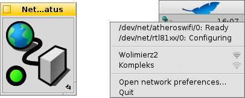

Português (Brazil)
Português (Brazil) Français
Français Deutsch
Deutsch Italiano
Italiano Русский
Русский Español
Español Svenska
Svenska 日本語
日本語 Українська
Українська 中文 ［中文］
中文 ［中文］ Português
Português Suomi
Suomi Slovenčina
Slovenčina Magyar
Magyar English
English NetworkStatus
NetworkStatus
| Deskbar: | ||
| Localização: | /boot/system/apps/NetworkStatus | |
| Configurações: | nenhuma |
NetworkStatus shows the status of your network connections. If not yet running, launching the applet will ask if it should open in window mode or live in the Deskbar. In window mode you're able to resize the icon by resizing the window and use the Replicant handle to drag it to the Desktop.
Wherever installed, it's operated via a right-click context menu.

The first section contains all network devices' names and their state. Clicking on such an entry brings up a window showing its IP, broadcast and netmask address.
Below is a list of all wireless networks found by the first wireless adapter and an indicator of their signal strength. Have a look at the Workshop: Wireless networking for more information on how to set up a connection.
Lastly, you can to change your network configuration or the applet.
Status icons
| Ready | Link is established. | ||
| Configuring | Connecting in progress. | ||
| No stateful configuration | Some settings are missing (check IP configuration). | ||
| No link | There is no physical connection (probably the network cable is not connected and wireless networks are unavailable). | ||
| - | There are no network adapters available (if you are sure that at least one is connected, there are probably no drivers yet). |